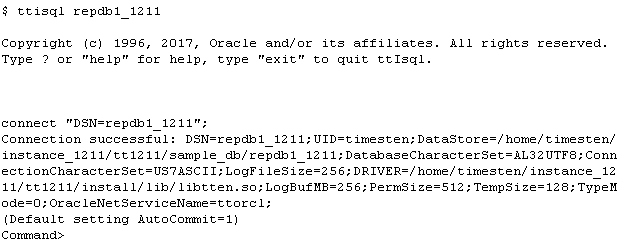
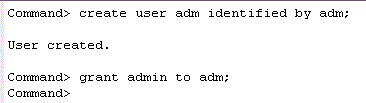
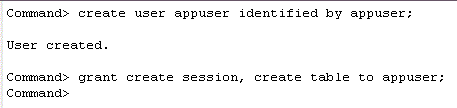
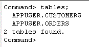

This tutorial will make use of the DSNs repdb1_1211 and repdb2_1211. The hostnames of the two machines in the examples are tthost1 and tthost2. repdb1_1211 will be created as the active database on tthost1, and repdb2_1211 will be created on tthost2 as the standby database.
In order to set up an active standby pair, you need to first create an active master database. This database must include a user with the ADMIN privilege, and an application user with some tables to demonstrate data replication.
1. Create an Active Master Database
Log in to server 1(tthost1) as the instance administrator and define a DSN for the active master database. In this example we will use DSN repdb1_1211.
In your <instance_dir>/conf/sys.odbc.ini file, add a new data source name in the section labeled [ODBC Data Sources] :
repdb1_1211=TimesTen 18.1 Driver
For each DSN entry specified, there is a corresponding set of database properties and attributes you need to specify. The database attributes can be added anywhere after the [ODBC Data Sources] section.Note: The DSN name appears inside square brackets at the top of the DSN definition on a line by itself
[repdb1_1211]
Driver=/home/timesten/instance/tt181/install/lib/libtten.so
DataStore=/home/timesten/instance/tt181/sample_db/repdb1_1211
PermSize=512
TempSize=128
LogBufMB=256
LogFileSize=256
DatabaseCharacterSet=AL32UTF8
PLSQL=1
OracleNetServiceName=ttorcl
Refer to the section Setting up a Data Source Name if you need information on how to define your own DSNs.
Note:To improve the replication throughput, you should set ReplicationParallelism to a higher value (default is 4) in your DSN to leverage the processing power of modern multi-core systems and high bandwidth low-latency networks.
Many of the OLTP applications have transactions that are independent of each other. For such application, set the database attribute ReplicationApplyOrdering to 2 (default is 0) in your DSN to enable Automatic Parallel Replication (APR) with Commit Optimization feature by relax enforcing commit ordering on the receiving hosts to gain further replication throughput improvement.
Create and connect to the database repdb1_1211 using ttIsql
ttisql repdb1_1211

2. Create a Database User to Administer the Replication Operations
Create a database user and assign it the role of the database and replication administrator. This user is responsible for setting up and managing the active/standby pair.
In ttIsql, create an administrator and grant this user admin privilege. In this example, this user created is adm.
create user adm identified by adm;
grant admin to adm;
Create an application user and tables in the database. In our example, we will create an application user called appuser and this user will own the customers and orders tables.
create user appuser identified by appuser;
grant create session, create table to appuser;
Log in as the user appuser in ttIsql.
connect "dsn=repdb1_1211;uid=appuser";
Execute the following SQL statements, or run the script create_appuser_obj.sql located in the <QUICKSTART_HOME>/sample_scripts/replication directory, to create the 2 tables in the appuser schema.
Note: <QUICKSTART_HOME> is the location where you unzip the QuickStart Guide tar file.create table customers (
cust_number number,
first_name varchar2(12) not null,
last_name varchar2(12) not null,
address varchar2(100) not null,
primary key (cust_number));insert into customers values (3700,'Peter','Burchard','882 Osborne Avenue, Boston, MA 02122');
insert into customers values (1121,'Saul','Mendoza','721 Stardust Street, Mountain View, CA 94043');create table orders (
order_number number not null,
cust_number number not null,
prod_number char(10) not null,
order_date date not null,
primary key (order_number),
foreign key (cust_number) references customers (cust_number));insert into ORDERS values (6853036,3700,'0028616731',to_date('2008-04-05','yyyy-mm-dd'));
insert into ORDERS values (6853041,3700,'0198612710',to_date('2009-01-12','yyyy-mm-dd'));
insert into ORDERS values (6853169,1121,'0003750299',to_date('2008-08-01','yyyy-mm-dd'));
insert into ORDERS values (6853174,1121,'0789428741',to_date('2008-10-25','yyyy-mm-dd'));
insert into ORDERS values (6853179,1121,'0198612583',to_date('2009-02-02','yyyy-mm-dd'));
Use the tables command in ttIsql to confirm that the tables have been created.
tables;

After setting up an initial database, you can now define the configuration of the active standby pair and designate the current database as the active database.
| 1 | 2 | 3 | Next > |